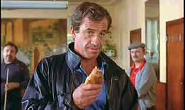

| Le Professionnel/C,B |
| Image/1983/104/ANA 1.66 |
If ever a flick smelled of movie star
play-for-pay, it's Le Professionnel. The script is thread-bare, merely
an excuse for French movie idol Jean-Paul Belmondo to throw some high
kicks and cute comments liberally around. The direction by Georges
Lautner is hackneyed. They could have called this one The Amateur
without changing a thing.
Belmondo plays Commander Joss Beaumont sent on an
African mission to assassinate the president of a former French
possession. We first meet Beaumont at his trial at which he faints and
is treated with a drug-filled syringe that revives him to obedience. That
one made me scratch my head immediately. Joss is sentenced to hard
labor. It looks like this might be a prison flick, but very little
happens in Africa. Trust me on this, Joss's escape from the prison is
none too convincing, and no, I am not giving away the goods.
|
 |
| Keep away from my croissant. ©Image |
The heart of the film takes place in Paris on Joss's
return. Joss does not report back in to his superiors, to his wife, to
his mistress, or his best friend right away, but sends a cryptic message
to the military cum police agency that sent him on his assignment. It
seems Joss is still bent on carrying out the job and convenience would
have it that the same African president is about to arrive in Paris for
a trade conference.
Scenes I'd like to excise: Joss slipping in and out
of windows to avoid detection by the cops. Paging The Marx Brothers. A
totally gratuitous car chase; at least movie car chases usually have a
reason behind them. This one doesn't. Joss and the needle. Joss meets
the trick.
Belmondo at 48 looks like he's lived a active night
life. He's rather long in the tooth for this kind of action stuff, yet
he can still hop a wall with effortless power. He does look strong. He
tries hard to recall his most debonair screen moments, but his charm has
faded and the struggling script doesn't help him out much.
The film
looks pretty much uniformly sharp. There's some straight edge artifact
interaction, but only on blinds. Color is actually quite good.
Belmondo's admirable tan shows up well in every scene. Shadow detail is
good. Good depth on blacks.The weakest part of the transfer are the African
scenes. They are somewhat washed out and excessively grainy. The white English
titles are easy to read and unobtrusive. The Ennio Morricone score is
rather thinly recorded in mono.

Selections from the Feature Archive
include articles on Akira Kurosawa, Frank
Darabont, Blonde Bimbos, Hollywood Street Gangs, or Vietnam: The
Hollywood Pariah, and many more....
Film noir: The phrase hangs awkwardly on the tongue, shadowy images peek out from behind half-closed doors. Click on the Noir and Noir Again symbol for a look into the dark spaces of Hollywood's revisiting of film noir.


Excellent resource with DVD reviews, forum and more.
Home of the DVD Savant.

DVD Price Search
Allows you to create a "Comparison Cart" filled
with the DVD titles that you are interested in buying.

Mystery writer Fred Hunter digs into classic films on DVD. Check out
his insightful reviews at The Classics on DVD.

Charade/A,B

Successfully combining romantic comedy and suspense is no small achievement. Charade does it
with panache.

Click on the DVD MIA symbol for
profiles of DVDs missing in action.
Add films to the DVD MIA Master List by filling out
a simple form. Click Here